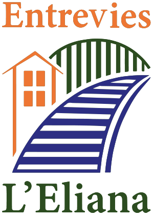
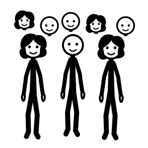
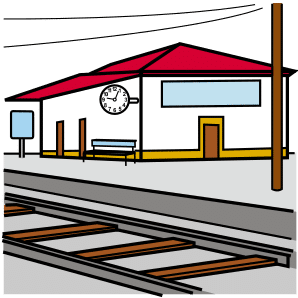
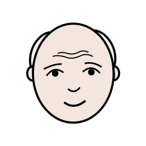
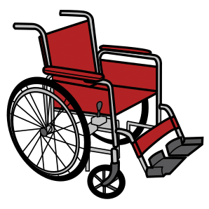
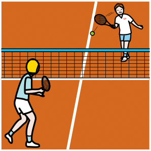
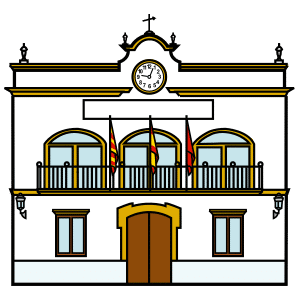
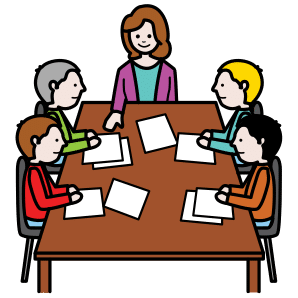
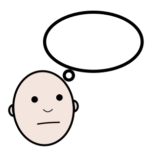
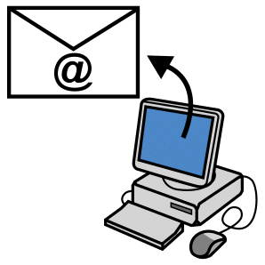

Entrevies en lectura fácil
En esta página te explicamos qué es Entrevies con palabras fáciles.
¿Quiénes somos?

Somos una asociación de vecinos y vecinas.

Vivimos en l'Eliana, en los barrios de l'Estació, Montepilar, Montealegre y Pinaeta del Cel.

Trabajamos juntos para mejorar nuestros barrios.
El paso del tren

En la estación del tren había un paso para cruzar las vías.

La gente cruzó por ese paso durante más de 100 años.

En diciembre de 2024 cerraron el paso.

Ahora mucha gente no puede ir al otro lado del pueblo. Por ejemplo, las personas mayores.

O las personas que van en silla de ruedas.

Pedimos que abran otra vez el paso. Y que sea seguro para todas las personas.
Lo que pedimos para los barrios

Un parque para descansar, jugar y pasear.

Pistas para jugar al baloncesto.

Pistas para jugar al tenis.

Un sitio con valla para los perros.

Aceras sin escalones, para pasar con silla de ruedas o con carrito.

Más luz en las calles por la noche.
Lo que hacemos

Hablamos con el Ayuntamiento para pedir lo que necesitan los barrios.

Hacemos reuniones para decidir juntos qué hacer.

Contamos las noticias en esta web. Siempre decimos de dónde sale cada noticia. Así sabes que es verdad.
Hazte socio o socia

Puedes ser socio o socia de Entrevies.

Cuesta 10 euros cada año.

Para hacerte socio, rellena un formulario. Pide ayuda si lo necesitas.
Cuéntanos lo que necesitas

¿Tienes una pregunta?

¿Tienes una idea para el barrio?

¿Hay un problema en tu calle?

Escríbenos. Leemos todos los mensajes y te contestamos.
También puedes escribir un correo a entreviesleliana@gmail.com